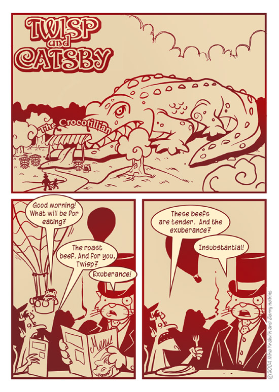

When you load N the title screen has a random level being shown in the background. I often see this level and think it'd be fun to play, but I have no idea which level it is so I can't launch it. If it said the level name/number at the bottom (like when you play normally) then you could find it and play it.
I don't actually mind that idea; it wouldn't detract from the game at all, or hurt anyone. I suppose there wouldn't be any real use, because alot of people who've been playing N for a while would know what level it is anyway, but yeah, I wouldn't mind seeing that implemented.
When you see this level pop up, before the ninja goes too far, press the tilde (~) key to enter debug mode. Then, press the R button to reset the objects. Press P and then Caps Lock and you shold be playing the level. If you die and want to retry, press tilde (~) again, press R, and then press P.
It won't tell you what level it is, but you should be able to play. (I think those are the buttons you should press. Basically, just use the debug mode to play.)
That said, I think it would be cool to have the title of a level appear on the main-screen demo! It would really help to get new players used to the look and style of specific levels.
It won't tell you what level it is, but you should be able to play. (I think those are the buttons you should press. Basically, just use the debug mode to play.)
That said, I think it would be cool to have the title of a level appear on the main-screen demo! It would really help to get new players used to the look and style of specific levels.
My N Level Data program might help in your search to find the level.
This has already been suggested, but I'm all for it! (It was me who suggested... lol) 
I've been thinking of suggesting this myself. I like the idea.
Am I the only one against this idea? I believe that such a feature would spoil the later levels for new people. It just doesn't feel right for a new person to know what 18-3 looks like.
Yeah Maniac has a point, but it wouldnt be a big deal if the player sees how the upcoming levels look like, I mean the player wouldnt go "Ah damn, I saw how 80-4 looks like, im going to kill myself". Si I say yes to this idea, the majority of the vote wins!
Wait... there is no vote, nor is there a poll. [/captan obvious]
Wait... there is no vote, nor is there a poll. [/captan obvious]
I love this idea.
Maniac, your opposition doesn't make sense. If someone wants to see later levels, they can just go into the highscores and view a score for a level they haven't played. Also, if they don't want to see the levels, they don't have to look at the bottom. In reality, the words are pretty small and inconspicuous, and easily skipped over.
Atticus - 87-8!?
Maniac, your opposition doesn't make sense. If someone wants to see later levels, they can just go into the highscores and view a score for a level they haven't played. Also, if they don't want to see the levels, they don't have to look at the bottom. In reality, the words are pretty small and inconspicuous, and easily skipped over.
Atticus - 87-8!?
Just... skimming... through... my... posts... without much thought... =|
Just... skimming... through... my... posts... without much thought... =|
 What?
What?I agree with LV, but to greater degree: WTF??????????? 
I just don't get this whole "forum" thing. Is there something I'm missing? Is it okay to just post in random threads (that had decent and respectable topics) saying "just checking my sig" or "none of you have ever met me before but i totally agree so i can raise my post count". These two examples are dramatizations from other random members, but it's indicative of a more sinister force sweeping through the forums and generating a depravity of legitimate conversation and an excess of random spam.
ERRRRGH. I just... I can't explain it. These posts show signs of some kind of forum-pocalypse, the likes of which the Internet has never seen. The end is here. Relevant posts are dead. Repent!
*begins weeping blood*
NOOOOOOOOOOOOOOOOOOOOO!!!!
Senseless posts everywhere!
Insubstantial.
Oh, and this suggestion is perfect. It would do nothing but improve the game. Any arguments to the contrary consist of "it may make things easier, but it's not needed". Well, where I'm from, any suggestion that makes something easier and more user friendly is a good one.
I'm.... just... skimming... through.... my.... posts.... without much thought...What kind of a response is that to:
Maniac, your opposition doesn't make sense. If someone wants to see later levels, they can just go into the highscores and view a score for a level they haven't played. Also, if they don't want to see the levels, they don't have to look at the bottom. In reality, the words are pretty small and inconspicuous, and easily skipped over.
Atticus - 87-8!?
I just don't get this whole "forum" thing. Is there something I'm missing? Is it okay to just post in random threads (that had decent and respectable topics) saying "just checking my sig" or "none of you have ever met me before but i totally agree so i can raise my post count". These two examples are dramatizations from other random members, but it's indicative of a more sinister force sweeping through the forums and generating a depravity of legitimate conversation and an excess of random spam.
ERRRRGH. I just... I can't explain it. These posts show signs of some kind of forum-pocalypse, the likes of which the Internet has never seen. The end is here. Relevant posts are dead. Repent!
*begins weeping blood*
NOOOOOOOOOOOOOOOOOOOOO!!!!
Senseless posts everywhere!

Insubstantial.
Oh, and this suggestion is perfect. It would do nothing but improve the game. Any arguments to the contrary consist of "it may make things easier, but it's not needed". Well, where I'm from, any suggestion that makes something easier and more user friendly is a good one.
I like the idea, but doesn't the game only show demo's of already beaten levels? And why would it shock someone to see 80-4? You can play that from the beginning.
and if it wouldn't say the number, no harm done.
and if it wouldn't say the number, no harm done.
Make it an option that starts out disabled.
Yeah, that'd solve it. I've beaten N, and I still see a level that's all "OOH! that looks fun!"